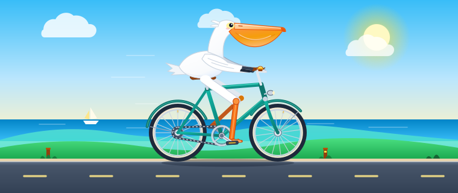

PRO1 · 源卡片模板
760×320 SVG
绿松石钢架
2-Bone IK
海岸鹈鹕骑车（Pro1）
零依赖内联矢量，绿松石复古公路架配双连杆逆向运动学（IK）踩踏、海湾丘陵视差层与喉囊弹鱼彩蛋；右侧 Pro6 卡片将由光标直接从此卡 ⌘C/⌘V 克隆搭建。
Pro1 & Pro6）PRO1V–PRO5C 光标现场框选线框、激光扫描显影、从 Pro1 拖影 ⌘C/⌘V 克隆卡片到 Pro6，并将歪斜标签 move 归位

零依赖内联矢量，绿松石复古公路架配双连杆逆向运动学（IK）踩踏、海湾丘陵视差层与喉囊弹鱼彩蛋；右侧 Pro6 卡片将由光标直接从此卡 ⌘C/⌘V 克隆搭建。

朱红复古钢架与水手条纹围巾鹈鹕，支持 18 根交叉编织辐条、28:16 链条耦合、海港巡游多场景与铜铃 Web Audio 音效；可观察光标搬运虚影粘贴与逐词打字效果。
专为展示 CursorSwarm 光标而生：画布拆成 7 个独立矢量图层 Pod——看光标如何先扫出 后轮、现场 ⌘C→拖拽→⌘V 复制出 前轮，再把 鹈鹕骑手 与 前车篮 精准 move 落座！